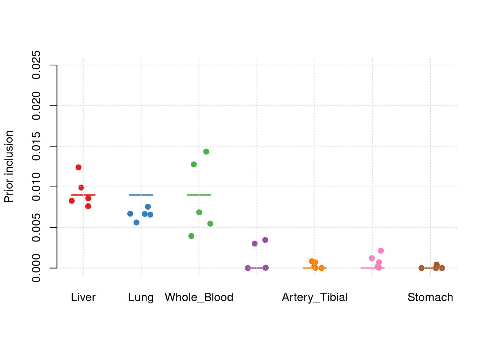
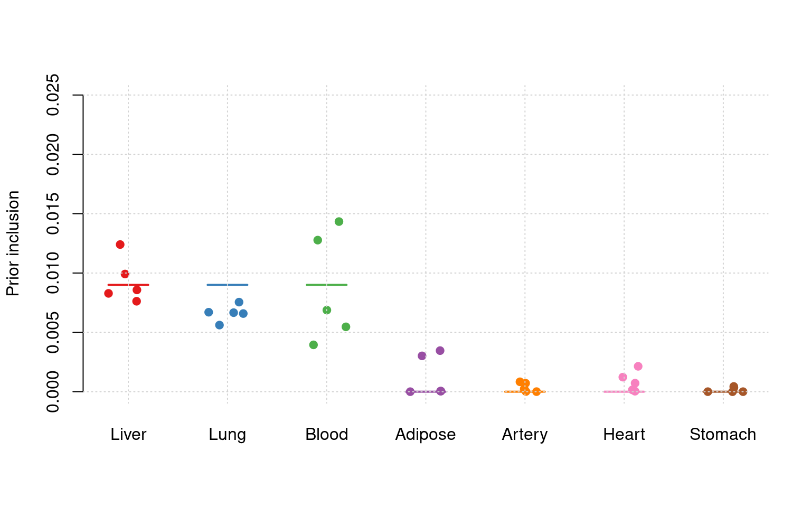
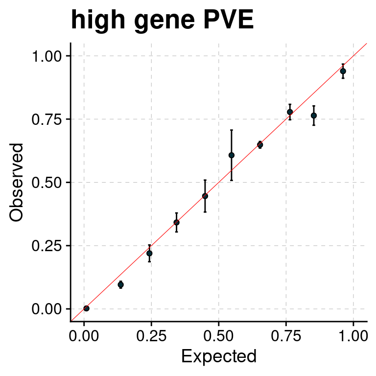
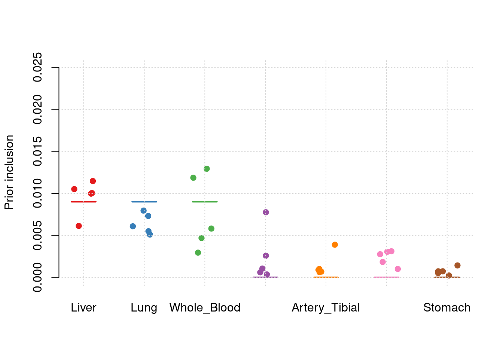
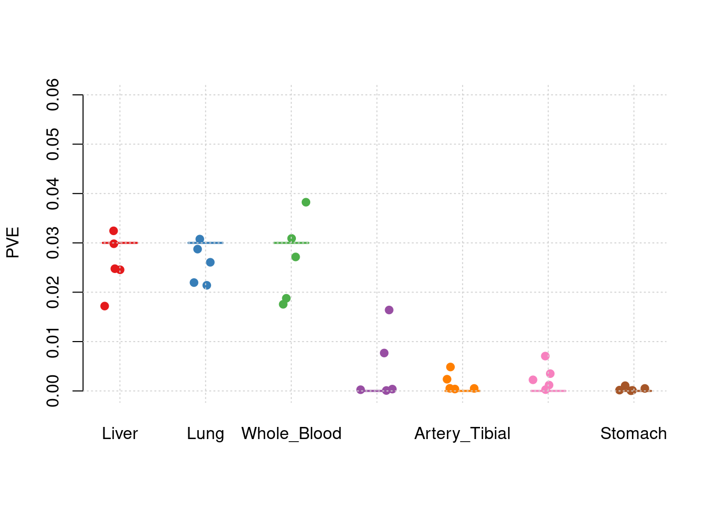

Seven Uncorrelated Tissues Simulation
shengqian
2023-12-30
Last updated: 2023-12-30
Checks: 6 1
Knit directory: multigroup_ctwas_analysis/
This reproducible R Markdown analysis was created with workflowr (version 1.7.0). The Checks tab describes the reproducibility checks that were applied when the results were created. The Past versions tab lists the development history.
The R Markdown is untracked by Git. To know which version of the R Markdown file created these results, you’ll want to first commit it to the Git repo. If you’re still working on the analysis, you can ignore this warning. When you’re finished, you can run wflow_publish to commit the R Markdown file and build the HTML.
Great job! The global environment was empty. Objects defined in the global environment can affect the analysis in your R Markdown file in unknown ways. For reproduciblity it’s best to always run the code in an empty environment.
The command set.seed(20231112) was run prior to running the code in the R Markdown file. Setting a seed ensures that any results that rely on randomness, e.g. subsampling or permutations, are reproducible.
Great job! Recording the operating system, R version, and package versions is critical for reproducibility.
Nice! There were no cached chunks for this analysis, so you can be confident that you successfully produced the results during this run.
Great job! Using relative paths to the files within your workflowr project makes it easier to run your code on other machines.
Great! You are using Git for version control. Tracking code development and connecting the code version to the results is critical for reproducibility.
The results in this page were generated with repository version ad61893. See the Past versions tab to see a history of the changes made to the R Markdown and HTML files.
Note that you need to be careful to ensure that all relevant files for the analysis have been committed to Git prior to generating the results (you can use wflow_publish or wflow_git_commit). workflowr only checks the R Markdown file, but you know if there are other scripts or data files that it depends on. Below is the status of the Git repository when the results were generated:
Untracked files:
Untracked: analysis/simulation_seven_tissues_correlated.Rmd
Untracked: analysis/simulation_seven_tissues_uncorrelated.Rmd
Unstaged changes:
Modified: analysis/index.Rmd
Note that any generated files, e.g. HTML, png, CSS, etc., are not included in this status report because it is ok for generated content to have uncommitted changes.
There are no past versions. Publish this analysis with wflow_publish() to start tracking its development.
library(ctwas)
library(data.table)
source("/project/xinhe/shengqian/cTWAS_simulation/summarize_basic_plots.R")
Attaching package: 'ggpubr'The following object is masked from 'package:cowplot':
get_legendsource("/project/xinhe/shengqian/cTWAS_simulation/summarize_ctwas_plots.R")
Attaching package: 'plyr'The following object is masked from 'package:ggpubr':
mutatesource("/project2/xinhe/shengqian/cTWAS/cTWAS_analysis/analysis/simulation_help_functions.R")
plot_PIP <- function(configtag, runtag, simutags, ...){
phenofs <- paste0(results_dir, runtag, "_simu", simutags, "-pheno.Rd")
susieIfs <- paste0(results_dir, runtag, "_simu",simutags, "_config", configtag,"_LDR",".susieIrss.txt")
f1 <- caliPIP_plot(phenofs, susieIfs, ...)
return(f1)
}Simulation 1: Three causal tissues and four non-causal tissues
30% PVE and 2.5e-4 prior inclusion for SNPs, 3% PVE and 0.009 prior inclusion for Liver, Lung and Whole Blood. 0% PVE for other tissues.
Shared effect size parameters
For the cTWAS analysis, tissues shared an effect size parameter.
results_dir <- "/project/xinhe/shengqian/cTWAS_simulation/simulation_uncorrelated_seven_tissues/"
runtag = "ukb-s80.45-3_7uncorr"
configtag <- 1
simutags <- paste(1, 1:5, sep = "-")
thin <- 0.1
sample_size <- 45000
PIP_threshold <- 0.8results_df <- get_sim_joint_res(results_dir,runtag,configtag,simutags,thin,sample_size,PIP_threshold)#results using PIP threshold (gene+tissue)
results_df[,c("simutag", "n_causal", "n_detected_pip", "n_detected_pip_in_causal")] simutag n_causal n_detected_pip n_detected_pip_in_causal
1 1-1 212 28 23
2 1-2 233 28 23
3 1-3 215 31 28
4 1-4 208 20 18
5 1-5 250 18 17#mean percent causal using PIP > 0.8
sum(results_df$n_detected_pip_in_causal)/sum(results_df$n_detected_pip)[1] 0.872#results using combined PIP threshold
results_df[,c("simutag", "n_causal_combined", "n_detected_comb_pip", "n_detected_comb_pip_in_causal")] simutag n_causal_combined n_detected_comb_pip n_detected_comb_pip_in_causal
1 1-1 211 48 44
2 1-2 232 45 40
3 1-3 215 48 41
4 1-4 205 39 36
5 1-5 249 38 37#mean percent causal using combined PIP > 0.8
sum(results_df$n_detected_comb_pip_in_causal)/sum(results_df$n_detected_comb_pip)[1] 0.9082569#prior inclusion and mean prior inclusion
results_df[,c(which(colnames(results_df)=="simutag"), setdiff(grep("prior", names(results_df)), grep("prior_var", names(results_df))))] simutag prior_SNP prior_Liver prior_Lung prior_Whole_Blood
1 1-1 0.0002485463 0.007621948 0.005613419 0.003948000
2 1-2 0.0002386113 0.009916968 0.006585072 0.005465533
3 1-3 0.0002323031 0.008577723 0.007549237 0.012772498
4 1-4 0.0002423999 0.008285412 0.006660686 0.006875146
5 1-5 0.0002163173 0.012400705 0.006698309 0.014335053
prior_Adipose_Subcutaneous prior_Artery_Tibial prior_Heart_Left_Ventricle
1 3.018931e-03 6.001398e-06 1.555114e-04
2 1.811114e-06 1.702405e-05 1.227370e-03
3 4.972467e-05 7.139294e-04 4.208939e-05
4 4.821703e-05 8.345974e-04 2.138326e-03
5 3.461578e-03 2.376967e-04 7.194429e-04
prior_Stomach
1 2.006821e-07
2 3.493262e-04
3 4.416738e-04
4 3.076348e-06
5 3.460707e-06colMeans(results_df[,setdiff(grep("prior", names(results_df)), grep("prior_var", names(results_df)))]) prior_SNP prior_Liver
0.0002356356 0.0093605512
prior_Lung prior_Whole_Blood
0.0066213444 0.0086792459
prior_Adipose_Subcutaneous prior_Artery_Tibial
0.0013160525 0.0003618498
prior_Heart_Left_Ventricle prior_Stomach
0.0008565479 0.0001595475 #prior variance and mean prior variance
results_df[,c(which(colnames(results_df)=="simutag"), grep("prior_var", names(results_df)))] simutag prior_var_SNP prior_var_Liver prior_var_Lung prior_var_Whole_Blood
1 1-1 8.274608 22.62783 22.62783 22.62783
2 1-2 9.962285 20.11661 20.11661 20.11661
3 1-3 8.637861 13.02761 13.02761 13.02761
4 1-4 8.834089 20.22149 20.22149 20.22149
5 1-5 10.701504 13.16406 13.16406 13.16406
prior_var_Adipose_Subcutaneous prior_var_Artery_Tibial
1 22.62783 22.62783
2 20.11661 20.11661
3 13.02761 13.02761
4 20.22149 20.22149
5 13.16406 13.16406
prior_var_Heart_Left_Ventricle prior_var_Stomach
1 22.62783 22.62783
2 20.11661 20.11661
3 13.02761 13.02761
4 20.22149 20.22149
5 13.16406 13.16406colMeans(results_df[,grep("prior_var", names(results_df))]) prior_var_SNP prior_var_Liver
9.28207 17.83152
prior_var_Lung prior_var_Whole_Blood
17.83152 17.83152
prior_var_Adipose_Subcutaneous prior_var_Artery_Tibial
17.83152 17.83152
prior_var_Heart_Left_Ventricle prior_var_Stomach
17.83152 17.83152 #PVE and mean PVE
results_df[,c(which(colnames(results_df)=="simutag"), grep("pve", names(results_df)))] simutag pve_SNP pve_Liver pve_Lung pve_Whole_Blood
1 1-1 0.2420956 0.02834227 0.02758864 0.01621921
2 1-2 0.2798223 0.03278381 0.02877234 0.01996167
3 1-3 0.2362074 0.01836379 0.02136129 0.03020995
4 1-4 0.2520731 0.02753296 0.02925445 0.02524089
5 1-5 0.2725011 0.02682638 0.01915204 0.03426091
pve_Adipose_Subcutaneous pve_Artery_Tibial pve_Heart_Left_Ventricle
1 1.472045e-02 2.919369e-05 0.0006470060
2 7.851009e-06 7.362261e-05 0.0045397654
3 1.395923e-04 1.999464e-03 0.0001008185
4 2.101060e-04 3.628138e-03 0.0079504194
5 9.819493e-03 6.726772e-04 0.0017413631
pve_Stomach
1 8.639000e-07
2 1.336897e-03
3 1.094658e-03
4 1.183479e-05
5 8.666961e-06colMeans(results_df[,grep("pve", names(results_df))]) pve_SNP pve_Liver pve_Lung
0.2565398813 0.0267698417 0.0252257509
pve_Whole_Blood pve_Adipose_Subcutaneous pve_Artery_Tibial
0.0251785254 0.0049794982 0.0012806191
pve_Heart_Left_Ventricle pve_Stomach
0.0029958745 0.0004905841 #TWAS results
results_df[,c(which(colnames(results_df)=="simutag"), grep("twas", names(results_df)))] simutag n_detected_twas n_detected_twas_in_causal n_detected_comb_twas
1 1-1 460 54 185
2 1-2 602 64 226
3 1-3 431 50 161
4 1-4 426 48 161
5 1-5 449 56 170
n_detected_comb_twas_in_causal
1 56
2 67
3 51
4 50
5 62sum(results_df$n_detected_comb_twas_in_causal)/sum(results_df$n_detected_comb_twas)[1] 0.316722y1 <- results_df$prior_Liver
y2 <- results_df$prior_Lung
y3 <- results_df$prior_Whole_Blood
y4 <- results_df$prior_Adipose_Subcutaneous
y5 <- results_df$prior_Artery_Tibial
y6 <- results_df$prior_Heart_Left_Ventricle
y7 <- results_df$prior_Stomach
truth <- rbind(c(1,0.009),c(2,0.009),c(3,0.009),c(4,0),c(5,0),c(6,0),c(7,0))
est <- rbind(cbind(1,y1),cbind(2,y2),cbind(3,y3),cbind(4,y4),cbind(5,y5),cbind(6,y6),cbind(7,y7))
plot_par_7(truth,est,xlabels = c("Liver","Lung","Whole_Blood","Adipose_Subcutaneous","Artery_Tibial","Heart_Left_Ventricle","Stomach"),ylim=c(0,0.025),ylab="Prior inclusion")
y1 <- results_df$pve_Liver
y2 <- results_df$pve_Lung
y3 <- results_df$pve_Whole_Blood
y4 <- results_df$pve_Adipose_Subcutaneous
y5 <- results_df$pve_Artery_Tibial
y6 <- results_df$pve_Heart_Left_Ventricle
y7 <- results_df$pve_Stomach
truth <- rbind(c(1,0.03),c(2,0.03),c(3,0.03),c(4,0),c(5,0),c(6,0),c(7,0))
est <- rbind(cbind(1,y1),cbind(2,y2),cbind(3,y3),cbind(4,y4),cbind(5,y5),cbind(6,y6),cbind(7,y7))
plot_par_7(truth,est,xlabels = c("Liver","Lung","Whole_Blood","Adipose_Subcutaneous","Artery_Tibial","Heart_Left_Ventricle","Stomach"),ylim=c(0,0.06),ylab="PVE")
f1 <- plot_PIP(configtag, runtag, paste(1, 1:5, sep = "-"), main = "high gene PVE")Warning: Using `size` aesthetic for lines was deprecated in ggplot2 3.4.0.
ℹ Please use `linewidth` instead.
This warning is displayed once every 8 hours.
Call `lifecycle::last_lifecycle_warnings()` to see where this warning was
generated.Warning: The `size` argument of `element_line()` is deprecated as of ggplot2 3.4.0.
ℹ Please use the `linewidth` argument instead.
This warning is displayed once every 8 hours.
Call `lifecycle::last_lifecycle_warnings()` to see where this warning was
generated.f1 ### Separate effect size parameters
For the cTWAS analysis, each tissue had its own prior inclusion parameter end effect size parameter.
results_dir <- "/project/xinhe/shengqian/cTWAS_simulation/simulation_uncorrelated_seven_tissues/"
runtag = "ukb-s80.45-3_7uncorr"
configtag <- 2
simutags <- paste(1, 1:5, sep = "-")
thin <- 0.1
sample_size <- 45000
PIP_threshold <- 0.8results_df <- get_sim_joint_res(results_dir,runtag,configtag,simutags,thin,sample_size,PIP_threshold)#results using PIP threshold (gene+tissue)
results_df[,c("simutag", "n_causal", "n_detected_pip", "n_detected_pip_in_causal")] simutag n_causal n_detected_pip n_detected_pip_in_causal
1 1-1 212 26 22
2 1-2 233 28 23
3 1-3 215 31 28
4 1-4 208 20 19
5 1-5 250 20 18#mean percent causal using PIP > 0.8
sum(results_df$n_detected_pip_in_causal)/sum(results_df$n_detected_pip)[1] 0.88#results using combined PIP threshold
results_df[,c("simutag", "n_causal_combined", "n_detected_comb_pip", "n_detected_comb_pip_in_causal")] simutag n_causal_combined n_detected_comb_pip n_detected_comb_pip_in_causal
1 1-1 211 47 43
2 1-2 232 45 39
3 1-3 215 48 41
4 1-4 205 38 35
5 1-5 249 40 39#mean percent causal using combined PIP > 0.8
sum(results_df$n_detected_comb_pip_in_causal)/sum(results_df$n_detected_comb_pip)[1] 0.9036697#prior inclusion and mean prior inclusion
results_df[,c(which(colnames(results_df)=="simutag"), setdiff(grep("prior", names(results_df)), grep("prior_var", names(results_df))))] simutag prior_SNP prior_Liver prior_Lung prior_Whole_Blood
1 1-1 0.0002443644 0.010502956 0.005091416 0.002940554
2 1-2 0.0002346972 0.010027416 0.006077122 0.004684825
3 1-3 0.0002304808 0.009965012 0.007305465 0.011857198
4 1-4 0.0002367544 0.006121703 0.007944045 0.005803923
5 1-5 0.0002094775 0.011459792 0.005492726 0.012925182
prior_Adipose_Subcutaneous prior_Artery_Tibial prior_Heart_Left_Ventricle
1 0.0025745066 0.0006824154 0.0018343196
2 0.0010463815 0.0008888367 0.0030441927
3 0.0003555987 0.0006158948 0.0009995712
4 0.0005985625 0.0038859034 0.0027553008
5 0.0077478112 0.0009992981 0.0031037525
prior_Stomach
1 0.0007234330
2 0.0014207567
3 0.0007210691
4 0.0005181261
5 0.0002281063colMeans(results_df[,setdiff(grep("prior", names(results_df)), grep("prior_var", names(results_df)))]) prior_SNP prior_Liver
0.0002311549 0.0096153757
prior_Lung prior_Whole_Blood
0.0063821547 0.0076423365
prior_Adipose_Subcutaneous prior_Artery_Tibial
0.0024645721 0.0014144697
prior_Heart_Left_Ventricle prior_Stomach
0.0023474274 0.0007222983 #prior variance and mean prior variance
results_df[,c(which(colnames(results_df)=="simutag"), grep("prior_var", names(results_df)))] simutag prior_var_SNP prior_var_Liver prior_var_Lung prior_var_Whole_Blood
1 1-1 8.380843 14.22444 25.98711 32.88325
2 1-2 10.078291 19.68738 23.31072 22.07177
3 1-3 8.721318 10.50035 13.83639 14.35451
4 1-4 8.991367 29.64595 15.10820 25.76661
5 1-5 10.952164 13.15210 17.94149 16.29645
prior_var_Adipose_Subcutaneous prior_var_Artery_Tibial
1 29.561451 2.630071
2 1.646979 2.758958
3 1.159702 17.940360
4 1.901471 5.806594
5 4.601767 2.371968
prior_var_Heart_Left_Ventricle prior_var_Stomach
1 3.522158 1.2074772
2 6.259636 3.9220217
3 1.439703 3.6824503
4 13.936568 1.1864726
5 3.944363 0.9562117colMeans(results_df[,grep("prior_var", names(results_df))]) prior_var_SNP prior_var_Liver
9.424797 17.442046
prior_var_Lung prior_var_Whole_Blood
19.236783 22.274517
prior_var_Adipose_Subcutaneous prior_var_Artery_Tibial
7.774274 6.301590
prior_var_Heart_Left_Ventricle prior_var_Stomach
5.820485 2.190927 #PVE and mean PVE
results_df[,c(which(colnames(results_df)=="simutag"), grep("pve", names(results_df)))] simutag pve_SNP pve_Liver pve_Lung pve_Whole_Blood
1 1-1 0.2410782 0.02455119 0.02873799 0.01755551
2 1-2 0.2784371 0.03244163 0.03076900 0.01877328
3 1-3 0.2366188 0.01719521 0.02195486 0.03090152
4 1-4 0.2505855 0.02982382 0.02606839 0.02715116
5 1-5 0.2700658 0.02476838 0.02140456 0.03824189
pve_Adipose_Subcutaneous pve_Artery_Tibial pve_Heart_Left_Ventricle
1 1.640003e-02 0.0003858423 0.0011879190
2 3.713667e-04 0.0005271821 0.0035036781
3 8.886517e-05 0.0023753700 0.0002645998
4 2.452586e-04 0.0048507294 0.0070603762
5 7.682959e-03 0.0005095625 0.0022509561
pve_Stomach
1 1.661840e-04
2 1.060087e-03
3 5.051563e-04
4 1.169513e-04
5 4.149573e-05colMeans(results_df[,grep("pve", names(results_df))]) pve_SNP pve_Liver pve_Lung
0.255357052 0.025756045 0.025786960
pve_Whole_Blood pve_Adipose_Subcutaneous pve_Artery_Tibial
0.026524672 0.004957696 0.001729737
pve_Heart_Left_Ventricle pve_Stomach
0.002853506 0.000377975 #TWAS results
results_df[,c(which(colnames(results_df)=="simutag"), grep("twas", names(results_df)))] simutag n_detected_twas n_detected_twas_in_causal n_detected_comb_twas
1 1-1 460 54 185
2 1-2 602 64 226
3 1-3 431 50 161
4 1-4 426 48 161
5 1-5 449 56 170
n_detected_comb_twas_in_causal
1 56
2 67
3 51
4 50
5 62sum(results_df$n_detected_comb_twas_in_causal)/sum(results_df$n_detected_comb_twas)[1] 0.316722y1 <- results_df$prior_Liver
y2 <- results_df$prior_Lung
y3 <- results_df$prior_Whole_Blood
y4 <- results_df$prior_Adipose_Subcutaneous
y5 <- results_df$prior_Artery_Tibial
y6 <- results_df$prior_Heart_Left_Ventricle
y7 <- results_df$prior_Stomach
truth <- rbind(c(1,0.009),c(2,0.009),c(3,0.009),c(4,0),c(5,0),c(6,0),c(7,0))
est <- rbind(cbind(1,y1),cbind(2,y2),cbind(3,y3),cbind(4,y4),cbind(5,y5),cbind(6,y6),cbind(7,y7))
plot_par_7(truth,est,xlabels = c("Liver","Lung","Whole_Blood","Adipose_Subcutaneous","Artery_Tibial","Heart_Left_Ventricle","Stomach"),ylim=c(0,0.025),ylab="Prior inclusion")
y1 <- results_df$pve_Liver
y2 <- results_df$pve_Lung
y3 <- results_df$pve_Whole_Blood
y4 <- results_df$pve_Adipose_Subcutaneous
y5 <- results_df$pve_Artery_Tibial
y6 <- results_df$pve_Heart_Left_Ventricle
y7 <- results_df$pve_Stomach
truth <- rbind(c(1,0.03),c(2,0.03),c(3,0.03),c(4,0),c(5,0),c(6,0),c(7,0))
est <- rbind(cbind(1,y1),cbind(2,y2),cbind(3,y3),cbind(4,y4),cbind(5,y5),cbind(6,y6),cbind(7,y7))
plot_par_7(truth,est,xlabels = c("Liver","Lung","Whole_Blood","Adipose_Subcutaneous","Artery_Tibial","Heart_Left_Ventricle","Stomach"),ylim=c(0,0.06),ylab="PVE")
f1 <- plot_PIP(configtag, runtag, paste(1, 1:5, sep = "-"), main = "high gene PVE")
f1
sessionInfo()R version 4.1.0 (2021-05-18)
Platform: x86_64-pc-linux-gnu (64-bit)
Running under: CentOS Linux 7 (Core)
Matrix products: default
BLAS/LAPACK: /software/openblas-0.3.13-el7-x86_64/lib/libopenblas_haswellp-r0.3.13.so
locale:
[1] LC_CTYPE=en_US.UTF-8 LC_NUMERIC=C
[3] LC_TIME=en_US.UTF-8 LC_COLLATE=en_US.UTF-8
[5] LC_MONETARY=en_US.UTF-8 LC_MESSAGES=en_US.UTF-8
[7] LC_PAPER=en_US.UTF-8 LC_NAME=C
[9] LC_ADDRESS=C LC_TELEPHONE=C
[11] LC_MEASUREMENT=en_US.UTF-8 LC_IDENTIFICATION=C
attached base packages:
[1] stats graphics grDevices utils datasets methods base
other attached packages:
[1] plyr_1.8.8 ggpubr_0.6.0 plotrix_3.8-4 cowplot_1.1.1
[5] ggplot2_3.4.0 data.table_1.14.6 ctwas_0.1.35 workflowr_1.7.0
loaded via a namespace (and not attached):
[1] Rcpp_1.0.9 lattice_0.20-44 tidyr_1.3.0 getPass_0.2-2
[5] ps_1.7.2 assertthat_0.2.1 rprojroot_2.0.3 digest_0.6.31
[9] foreach_1.5.2 utf8_1.2.2 R6_2.5.1 backports_1.2.1
[13] evaluate_0.19 highr_0.9 httr_1.4.4 pillar_1.8.1
[17] rlang_1.1.1 rstudioapi_0.14 car_3.1-1 whisker_0.4.1
[21] callr_3.7.3 jquerylib_0.1.4 Matrix_1.3-3 rmarkdown_2.19
[25] labeling_0.4.2 stringr_1.5.0 munsell_0.5.0 broom_1.0.2
[29] compiler_4.1.0 httpuv_1.6.7 xfun_0.35 pkgconfig_2.0.3
[33] htmltools_0.5.4 tidyselect_1.2.0 tibble_3.1.8 logging_0.10-108
[37] codetools_0.2-18 fansi_1.0.3 crayon_1.5.2 dplyr_1.0.10
[41] withr_2.5.0 later_1.3.0 grid_4.1.0 jsonlite_1.8.4
[45] gtable_0.3.1 lifecycle_1.0.3 DBI_1.1.3 git2r_0.30.1
[49] magrittr_2.0.3 scales_1.2.1 carData_3.0-4 cli_3.6.1
[53] stringi_1.7.8 cachem_1.0.6 farver_2.1.0 ggsignif_0.6.4
[57] fs_1.5.2 promises_1.2.0.1 pgenlibr_0.3.2 bslib_0.4.1
[61] vctrs_0.6.3 generics_0.1.3 iterators_1.0.14 tools_4.1.0
[65] glue_1.6.2 purrr_1.0.2 abind_1.4-5 processx_3.8.0
[69] fastmap_1.1.0 yaml_2.3.6 colorspace_2.0-3 rstatix_0.7.2
[73] knitr_1.41 sass_0.4.4